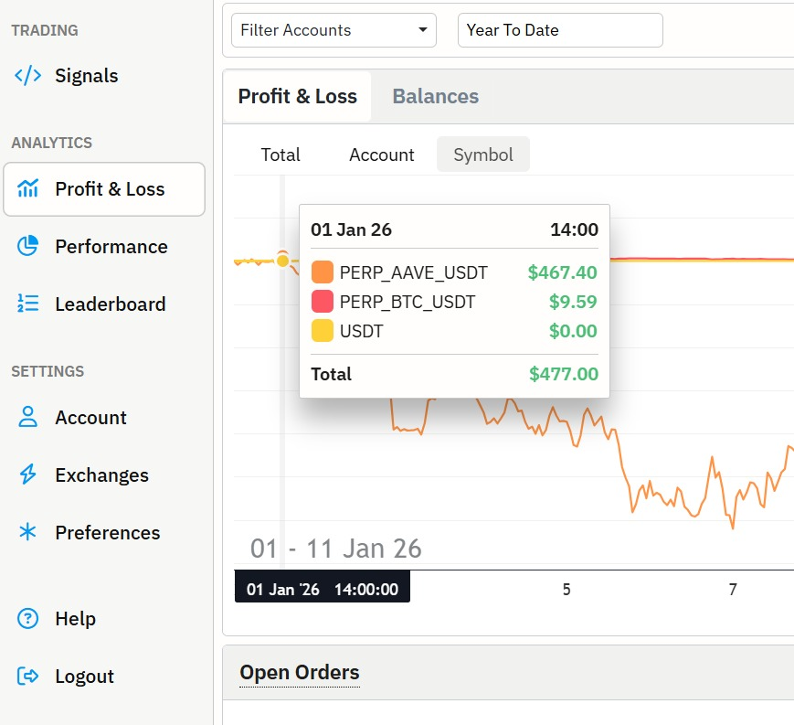

Projects
A selection of my recent work and contributions

Portfolio Optimizer
A portfolio risk analysis tool that performs stress-testing and Monte Carlo simulations to optimize asset allocation. Built with Python and Streamlit, it provides interactive visualizations of Value-at-Risk (VaR), portfolio variance, and scenario analysis for informed investment decisions.

Cryptocurrency Whale Tracking System (ON-GOING)
An automated monitoring system that identifies and tracks large-volume cryptocurrency transactions ("whale movements") in real-time. Analyzes on-chain data to detect significant wallet transfers and market-moving activities, providing early signals for potential price movements and market sentiment shifts.